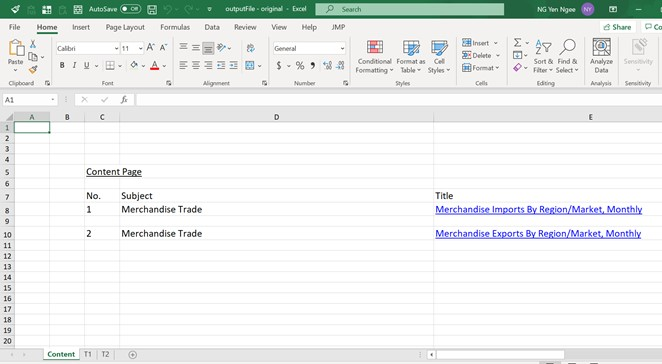
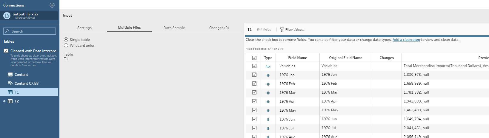
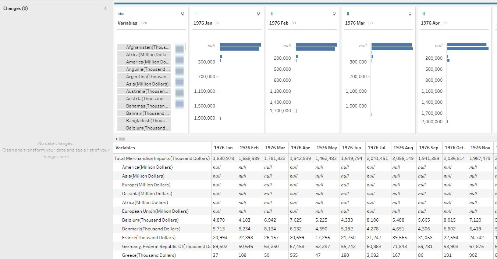

3. Step by Step Guide
In this portion, we will be running through the steps to create the final proposed visualization starting from loading and understanding the data, then we will run through what is done to prepare the data and finally creating the visualization on Tableau.
Loading and Understanding the data
The Data obtained from the subsection of Merchandise Trade by Region/Market and was downloaded by clicking on the link Download all in Excel on the same web page.
Opening the Excel file we see that there are 3 tabs:
- Content – describes the content of the data in each page, hence we will not use this sheet.
- T1 – Merchandise Imports
- T2 – Merchandise Exports

On the top and bottom of the tab, there are notes which we would need to remove in our data preparation step. The header row starts from 6th row. There is data with countries represented by row and monthly data represented by columns. Looking at the first few rows, there are also aggregated such as Total Merchandise and regional data such as Asia(Million Dollars) which we will need to remove. Across the columns, we would also only need to extract data from 2019 Jan to 2020 Dec. T2 has a similar structure as T1 and will be prepared in a similar way.


In our proposed visualization, we are looking at both exports and imports in a stacked area chart across time and country. Hence, we will need to prepare the data such that it is in a long format which makes it easier to manipulate in Tableau. The final form of the data should look something like this:
Data Preparation
We will be using Tableau Prep Builder to prepare the data. Each step is explained carefully such that it can also be replicated using alternative means.
Step 1: Connect to Data Source
After opening Tableau Prep Builder Software, we first need to connect to the Data Source. In this case, we will connect to the excel file that was previously downloaded.

Step 2: Add Data to Flow
In the new interface, drag and drop T1 onto the working space on the right. Tableau Prep Builder will automatically load the data. However, we can see that it has also included the notes that we need to delete. Tableau has a handy button on the left called Use Data Interpreter which automatically extracts the table data without us having the manually delete the columns.

From there, if we right click on T1, we can choose various steps to treat the data. We will first clean the data.

Step 3a: Clean T1 - filter the data
At this step, our data looks like this.

As mentioned in Loading and Understanding the data section, we need to exclude the aggregated data. Selecting the first 7 rows until “European Union (Million Dollars)”, we can right click and select Exclude to exclude these data. At the same time, our visualization only include data from 2019 to 2020. Hence, we select the columns from all other dates and select Remove. What is left is the Import data of all countries from 2019 to 2020.
Note: at this point, we could possibly only keep data from the 6 countries identified in the original visualization. It was just a personal choice to keep all of the data for now, so that we can do other visualization with all of the trade data for fun. ;)
Step 3b: Clean T1 - Split column to get country
If we look under variables, we know that it is in the format of “white space” + “country name” + “(Thousand Dollars)”. We want to only extract the country name, keeping in mind the values are in thousands. Hence, if we click the 3 dots on the column, we can do an Automatic split which will extract country name. The original column is then removed as we do not need it and the new column name is changed to “Country”.
The data after this step should look like this:
Step 4: Pivot T1
Next, we have to convert all the data in each column and pivot them into rows. To do so, we first select all the columns except for “Country”, and click on Pivot Columns to Rows.
This will automatically create a pivot step where they will keep the “Country” as it is and create row with each row containing the value found within the original column. We rename “Pivot1 Names” as “Date” and “Pivot1 Values” as “Import (in thousand)”
Repeat steps 2 to 4 for T2, except to rename the column after pivoting as “Export (in thousand)” since T2 has the same structure as T1.
Step 5: Join Pivoted T1 and Pivoted T2
Now we would like to combine the data set. There are different ways of doing this. However, I chose to inner join the two data sets on “Country” and “Date”. This means that the data left are countries that must have both imports and exports throughout the period of 2019 and 2020.
To do this, we simply drag Pivot 2 over Pivot 1 under the join option which will appear when you hover over it. This will be the result after removing the duplicated columns of “Date” and “Country”:
Note: a manual check confirms that the 6 countries that we are concerned with is part of this data set.
Step 6: Clean
At this point, it is easy to convert the “Import(in thousands)” and “Export(in thousands)” to the values multiply by 1000. Clicking the 3 dots, we select Create Calculated Field, then Custom Calculation.
We’ll come to this pop up where we can key in our new column. We will follow the following formulas:
- Export = [Export(in thousands)] * 1000
- Import = [Import(in thousands)] * 1000
We remove the old columns and select the 2 new columns (“Import” & “Export”) and pivot them again.
Step 7: Pivot + Final Clean
We are very close to the final table that we need. We just need to do a final check on the column name data type and change them where necessary:
column name change: + “Pivot1 Name” to “Trade Type” + “Pivot1 Value” to “Amount” data type change: + “Date”: from string to date type
Here is the final table:
In the work space, we can also see the following work flow:
Step 8: Output
We could create an output node to output the data. However, Tableau Data Prep allows us to have a shortcut. By right-click on the last node and selecting Preview in Tableau Desktop, we can create the visualization directly.
Create Visualization
We will be using Tableau Desktop to create the visualization and this section will provide a step by step guide to do so. Before we begin, it is always good to have cursory check on the data type. We see that “Country”, “Date” and Trade Type are dimensions while “Amount” is in Measure.
Step 1:
The first step is to drag and drop the data into our graph.
- Columns: we drag “Country” and “Date”
- Row: we drag “Amount”
Automatically, Tableau calculates the sum of the “Amount” which is exactly what we need. For “Date” it automatically selects the “Year” as an input dimension.
Step 2:
We can see from the screenshot above there are too many countries. Hence, we need to filter the data by “Country”. Drag and drop “Country” onto the Filter card next to the graph. A window will pop-up (see screenshot below). From there we will manually select the top 6 countries: United States, Malaysia, Hong Kong, Japan, Mainland China and Taiwan.

Results will look like this:
Step 3:
Now we have line charts of each countries’ total trade merchandise. However, we would like to split them into “Import” and “Export”. We drag “Trade Type” and drop them in colour. Tableau will split the data to 2 lines.
Step 4:
Tableau automatically churns out line graphs for us. However, following our proposed design, we want an area chart. On the left side under Marks, we can select Area in the drop down to turn this into an area chart.
Step 5:
This shows the yearly data for each country but we want quarterly data. Hence clicking on the triangle in the “Year(Date)” on “Date”, we can select Quarter from the list. Note that we choose the Quarter in the lower section, this would give a measure rather than a dimension. This means that the area chart would be continuous within each countries’ subplot.
This is the result:
step 6:
Now we have the foundation of the visualization. Let’s sort them in descending order. Under the Filters card, we click the triangle button on “Country” and select sort. A window will pop-up and we need to select such that we are sorting by Field, in descending Order, using the Field Name: “Amount” with Aggregation: “Sum”.
This is the result:
Step 7:
Let us now adjust the axis. For the y-axis, the values are in Billions with horizontal grid lines. All we need to do is to add the units to indicate dollars. So we right-click on the y-axis, and select format in the drop down. The formatting pane will appear on the left. Since we are formatting the axis, we do not change the tab. Under the scale, we can format the Number selecting Currency [Custom]:
- Decimal places: 0
- Display Units: Billion (B)
The changes can be seen immediately on the y-axis:
Step 8:
Formatting x-axis is slightly more tricky. Due to the limited space, we face the following issues for each subplot:
- not able to display label for all quarters. (i.e. cannot use 2019 Q1, 2019 Q2,…, 2020 Q4)
- not able to display simplified labels either (i.e. cannot use Q1, Q2, Q3, Q4, Q1, Q1, Q2, Q3, Q4)
- not able to display the year to split the “Quarters” without splitting area chart per country which is not what we want. (If we add year, it will be added as a dimension variable and tableau will automatically displays it on top. If we use only dimension variable, the graphs will split as mention.)
Hence to overcome these issues, we worked around it:
First let us format the x-axis such that it displays Q1,Q2 etc. Right click on the x-axis and selecting format will open the format pane on the left.
Under Scale, Dates, we select Custom and key in “Q”q.
We can see the changes immediately on the right.
Let us also change all the font size under Default and Title to size 8, Tableau Book.
Next we right click on the x-axis to Edit Axis, and click on the tab Tick Marks
We uncheck Show times as this is irrelevant for us. We will do the following changes:
- Major Tick Marks
- select Fixed
- Tick origin: 1/1/2019
- Interval: 2
- Unit: Quarters
- Minor Tick Marks
- select Fixed
- Tick origin: 1/4/2019
- Interval: 2
- Unit: Quarters
Now we can see that there are tick marks every quarter. The major tick marks will mark Q1 and Q3.
Switch to General to update the Axis Title by keying in “2019 | 2020” into Title
This is the little trick to label the year in the x-axis since the title will always be centered for each subplot.
Now we have a good x-axis with consistent width, consistent tick marks, sufficient labels. This is the end result:

Step 9:
Next we want to add circles to the total merchandise trade to indicate the points more clearly. Unfortunately, Tableau does not provide the option of adding shapes or marks to the individual points for area charts unlike line chart. Hence, we need to work around it by using dual axis.
First, we drag Amount to the right side of the chart until we see a dotted line. This will duplicate the same chart only with the y-axis on the right this time. If we look at the card under Marks, there is now additional cards. We pick the second one and make the following changes:
- Change
AreatoCirclein the dropdown - Remove “Trade type” from
colouras we do not need to split the data - change the
colourto something darker for visibility - change the
sizeto something smaller so that it does not overwhelm the visualization.
The results will be something like this:
Step 10:
Let us be a bit more specific with our titles. For the title at the y-axis, let us rename it as “Merchandise Trade Amount” For the “Country” at the top, it is rather redundant and so we will remove it. For the overall title we will write: “Singapore’s Top Six Merchandise Trading Partners (2019-2020)”
Let us also adjust the font size and font for consistency and so that attention is in the right place:
- Title Format: Tableau Light, size 15, Bold
- “Country” Format: Tableau Book, size 9, colour html: #555555
- y-axis title Format: Tableau Book, size 9, colour html: #555555
The results will be something like this:
Step 11
Now to add annotations and reference lines. Right-click on the white space to select annotations, and then Area, will pop-up a window for editing the annotation. For this visualization, we select Font = “Tableau Book” and Font Size = 9. We place the annotations in areas where the content of the annotations makes the most sense, taking into consideration the white spaces in the visualization.
One unique even that happened in 2020 is the spreading of COVID, which affected the whole world. To highlight that period, we added a reference band.
On the x-axis, right click to select Add Reference Line. A window will pop-up. As we would like to highlight a segment for each country, we select Band, Per Pane, ensuring that the date values in Band From is “1/1/2020” and date values in Band To is “1/4/2020”. Next, we edit the Label to Custom, entering “Covid Worsen in SG”, putting the Label to None under Band To so that only one label will appear.